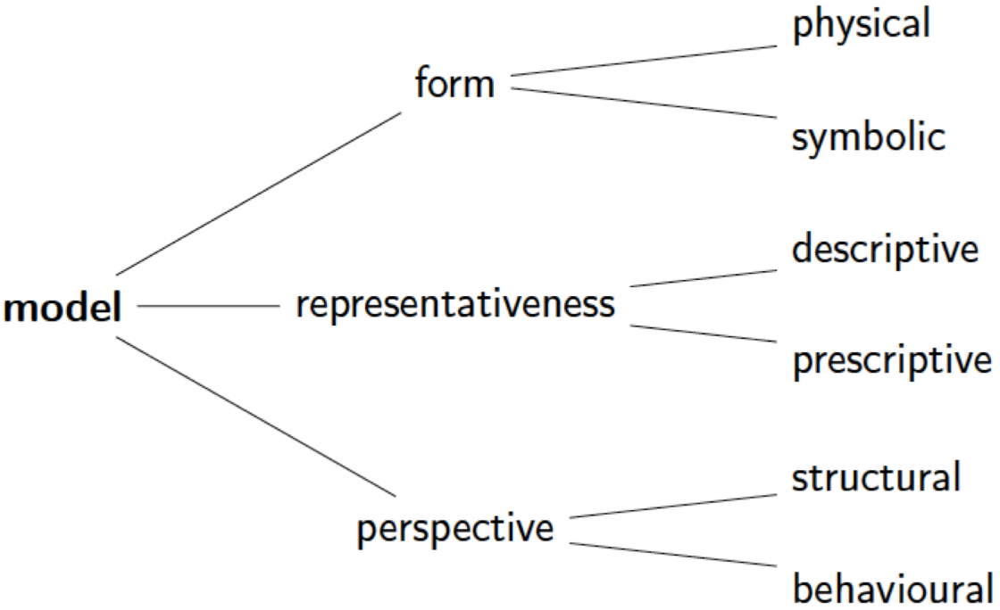
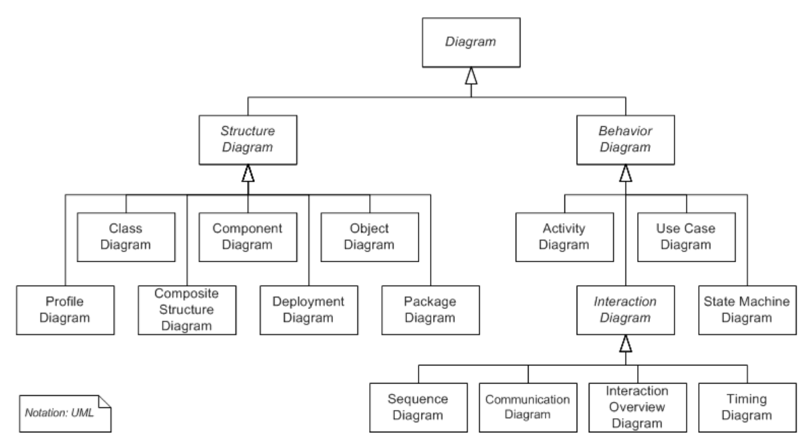
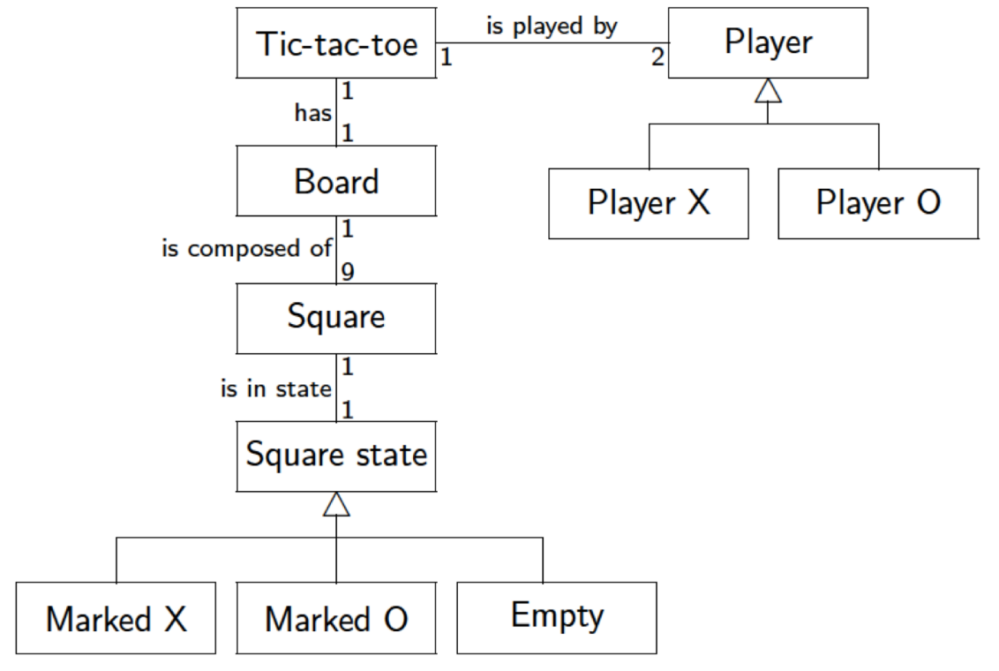
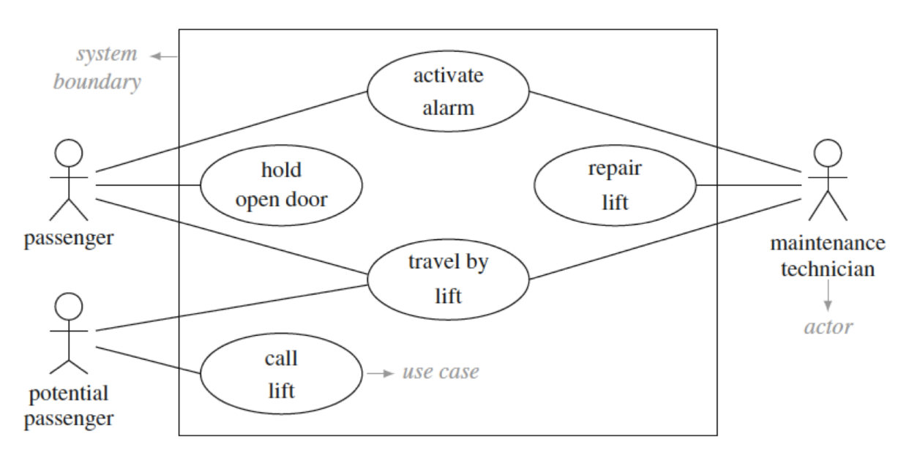
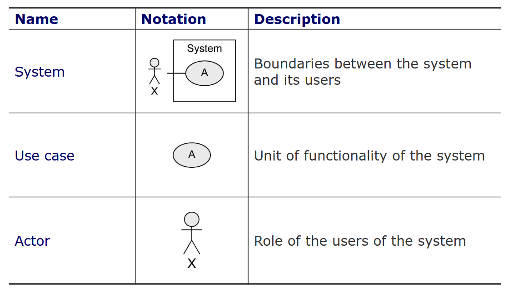
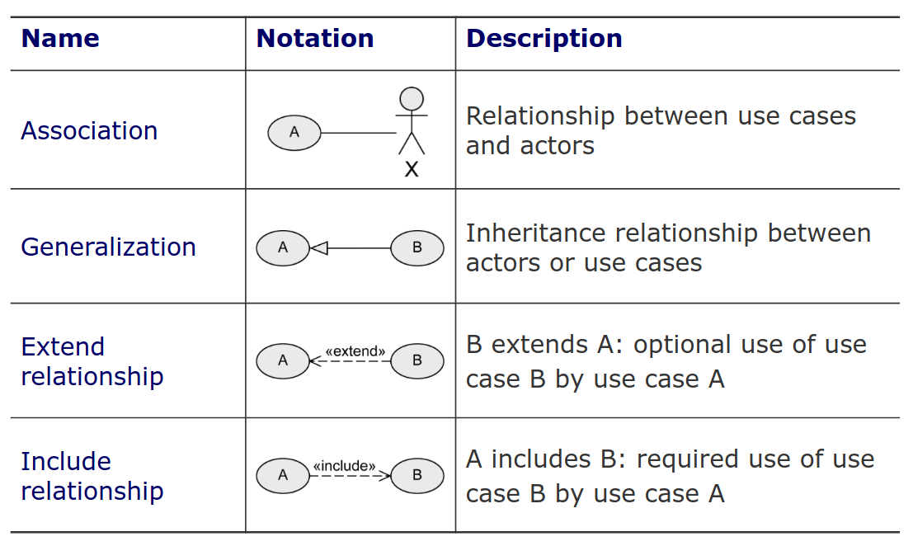
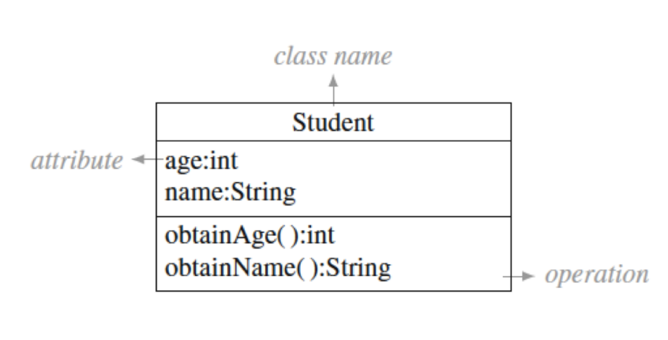
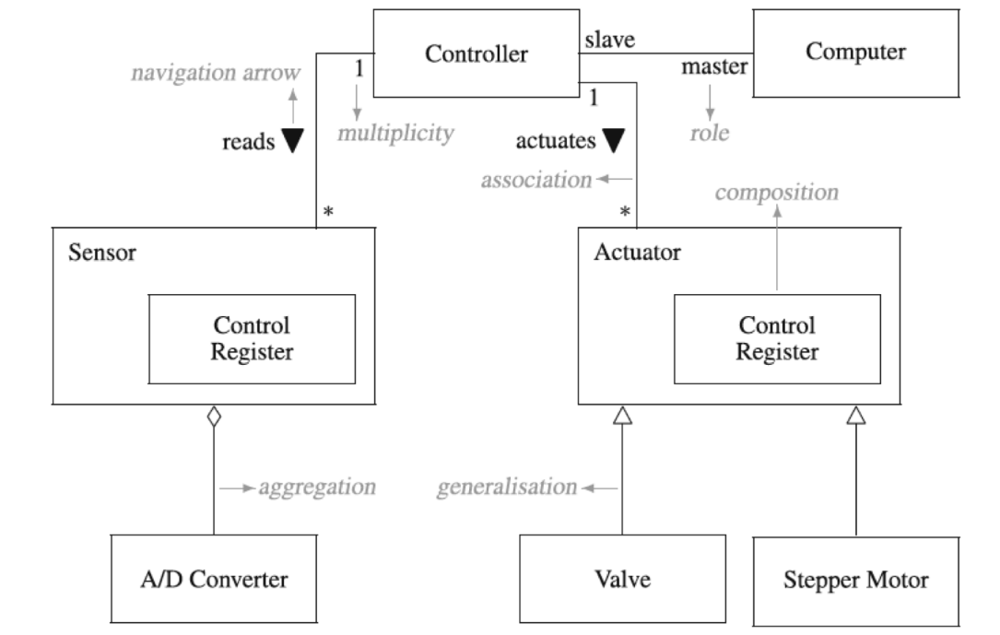
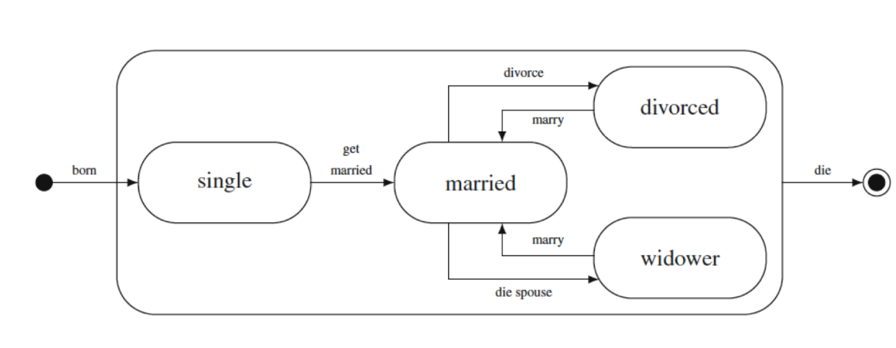
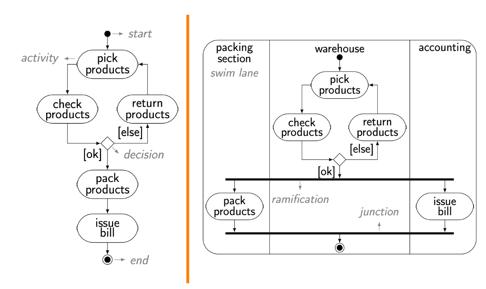

Teórica 13
Modelação UML
Modelação
- Ingrediente essencial em todos os campos de engenharia;
- Tarefa muito criativa;
- Processo de:
- Identificar conceitos adequados;
- Selecionar abstrações para construir um modelo que reflita, de forma apropriada, um dado universo de discurso.
- Permite um uso benéfico em termos de custo-eficiência de um modelo, ao invés de objetos ou processos do mundo real para algum propósito;
- Se deve ser útil, um modelo não deve representar todos os aspetos da realidade;
- É relacionado com abstração, simplificação e formalização;
- A operação inversa à abstração é o refinamento e a concretização.

Modelos Simbólicos
- Um modelo simbólico (ou matemático) utiliza relações lógicas e quantitativas envolvendo dimensões do sistema;
- Tipicamente, um modelo simbólico não tem em consideração o sistema que representa, sendo, fundamentalmente, arbitrário ou convencional;
- Arbitrariedade é a abstenção de conexões necessárias entre uma forma linguística e o seu significado;
- Uma classe é representada em UML por um retângulo, sendo isto uma convenção pura;
- A palavra "morango" não tem relação com o fruto em si, sendo uma pura convenção.
Propriedades dos Modelos
- Abstração: são uma descrição reduzida do sistema;
- Percetibilidade: removendo detalhes irrelevantes para um dado ponto de vista, o modelo permite que as propriedades do sistema sejam mais facilmente entendidas;
- Eficácia: para as propriedades de interesse, o modelo providencia uma representação true-to-life do sistema;
- Raciocínio: ajuda à análise e raciocínio correto acerca das propriedades interessantes do sistema, seja através de experimentalização ou de análise formal;
- Barato: deve ser muito mais barato do que construír e analisar o sistema.
UML
- Engenheiros de software utilizam UML em 3 modos:
- sketches (design informal);
- blueprint (desenvolvimento orientado a modelos);
- linguagem de programação.
- Em sketches, é utilizado para ajudar na comunicação de certos aspetos de um sistema;
- Em blueprints, detalha-se artefactos de design para produzir código;
- Estes modelos devem conter detalhes suficientes para permitir que os devs criem sistemas prontos a correr sem ser preciso tomar decisões de design;
- Quando o sistema pode ser especificado em UML, estamos na altura de usar UML como linguagem de programação.
Diagramas

Essencial
- Domínio: descreve o vocabulários, os concetos do domínio e as características dos sistemas que podem ser desenvolvidos para o domínio considerado;
- Use Case: descreve as funcionalidades propostas para um dado sistema;
- Interação: apresenta como é que múltiplos objetos ou entidades colaboram, enfatizando o flow de controlo e de dados entre eles;
- Classes: apresenta um conjunto de conceitos, tipos, classes e as suas respetivas relação;
- Estado: Especifica o comportamento de uma entidade ou indica os múltiplos estados (ou modos) sobre os quais passa durante a sua vida;
- Atividade: Apresenta o controlo entre atividades de um processo.
Modelo de Domínio

Use Cases

- Não modelam processos/workflows;
- Atores não são parte do sistema, logo devem ser colocados fora do retângulo principal (sistema);
- Podemos criar hereditariedade;
- Múltiplos use cases pequenos com o mesmo objetivo devem ser agrupados num use case mais abstrato;
- Os múltiplos passos de uma funcionalidade não são parte dos use cases, não devemos tentar separar os use cases deles mesmos;
- Não se faz decomposição funcional.


Diagrama de Classes


Diagrama de Estados

Diagrama de Atividade
